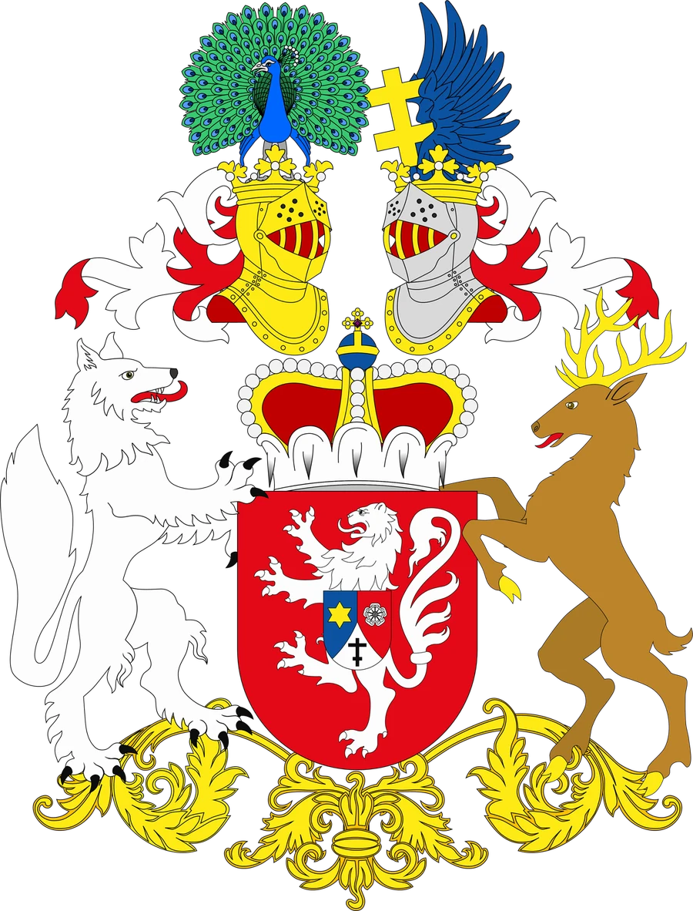
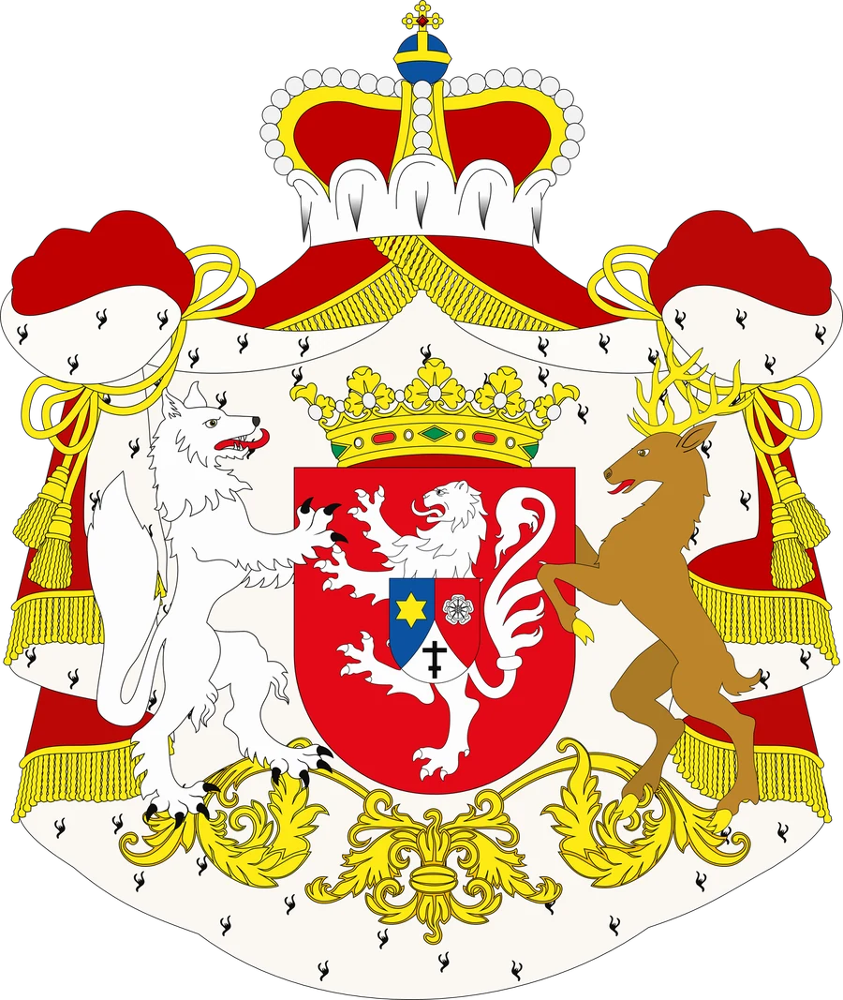
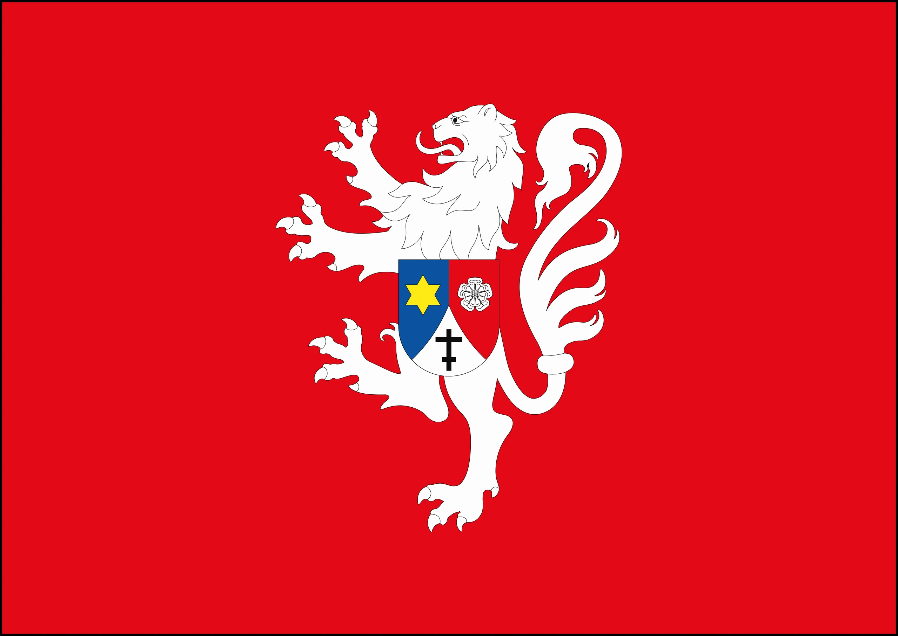
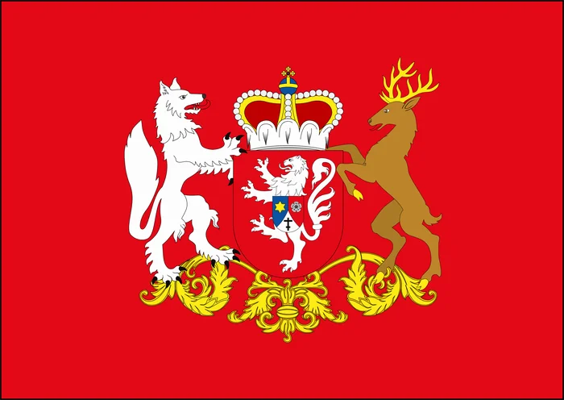

Restauração do arquivo heráldico da Casa




Um resumo dos trabalhos de catalogação e conservação dos brasões e documentos históricos ligados à Casa de Novgorod.
At vero eos et accusamus et iusto odio dignissimos ducimus qui blanditiis praesentium voluptatum deleniti atque corrupti quos dolores et quas molestias excepturi sint occaecati cupiditate non provident, similique sunt in culpa qui officia deserunt mollitia animi, id est laborum et dolorum fuga. Et harum quidem rerum facilis est et expedita distinctio.